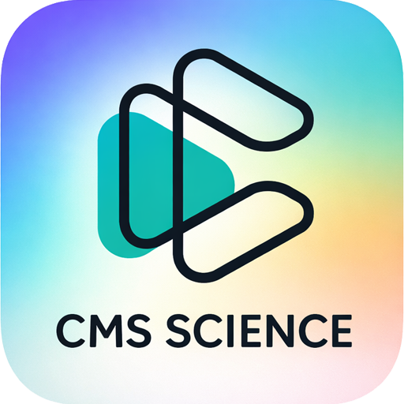

학부모용 바로가기
CMS SCIENCE API
CMS SCIENCE API 바로가기를 설치해주세요.
설치 후 아이콘을 누르면 학생 웹앱으로 바로 접속합니다.
Android/PC: Chrome 또는 Edge에서 설치 버튼을 누르세요.
iPhone: Safari에서 공유 → 홈 화면에 추가를 선택하세요.
카카오톡 내부 브라우저에서는 우측 하단 점3개 → 기본(다른) 브라우저로 열기를 권장합니다.
iPhone: Safari에서 공유 → 홈 화면에 추가를 선택하세요.
카카오톡 내부 브라우저에서는 우측 하단 점3개 → 기본(다른) 브라우저로 열기를 권장합니다.